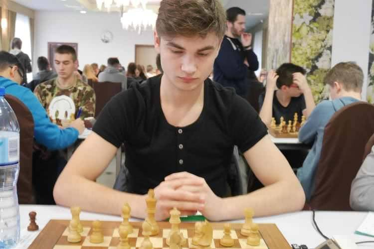

Bartosz Rudecki
(ur. 14 kwietnia 1999 w Radomsku) – polski szachista, streamer, znany pod pseudonimem „xntentacion” z platformy Twitch,gdzie ma ponad 345 000 obserwujących (stan na 08.2026). Posiada on także własny kanał na platformie YouTube. Jego ranking FIDE w szachach klasycznych wynosi 1939 (stan z 08.2026) – najwyższy wynik w karierze to 2007 (stan z 04.2017).